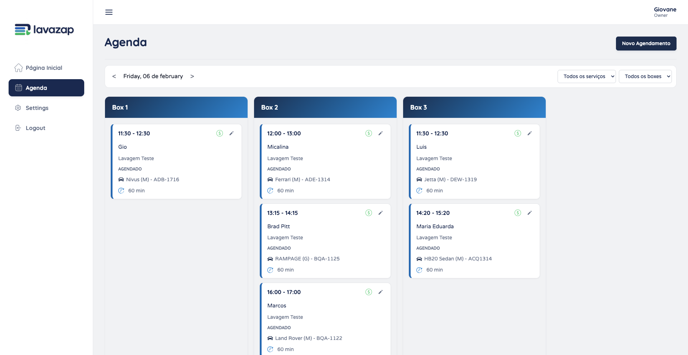
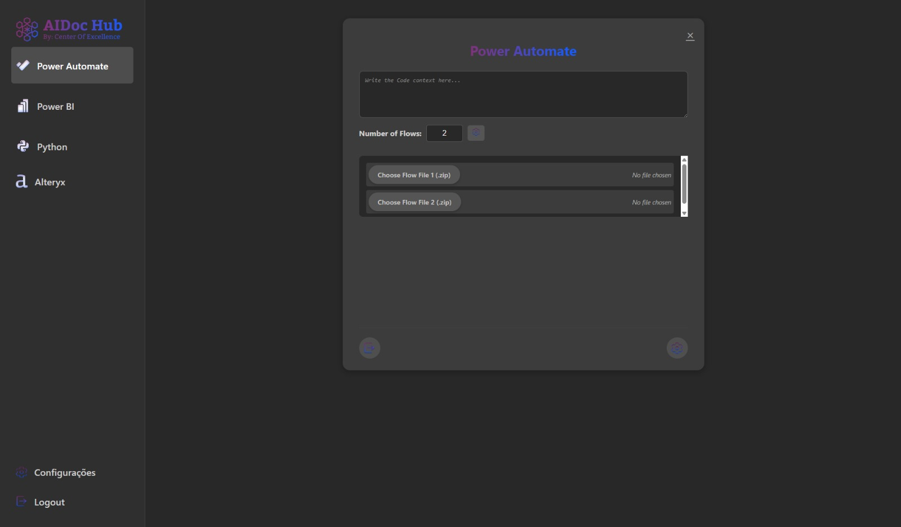

01SaaS para lava-car
LavaZap: a agenda do lava-car, box por box
Plataforma para empresas de lava-car: agenda do dia com uma coluna por box, lembretes automáticos por WhatsApp e relatórios para a administração.
React · Python · Postgres
Edição 01 / 2026Curitiba, PRTiragem: 1 link
Desenvolvo software, analiso dados e procuro o que dá pra simplificar num processo.
Full stack · Ciência de Dados · Excelência Operacional
Aberto a projetosCuritiba + remoto
p. 02
Sou o Murilo. Estou no 6º período de Ciência de Dados para Negócios na FAE e sou Analista de Dados Jr na Neodent, com foco em automação e análise de dados; comecei lá como estagiário em Excelência Operacional. Também desenvolvo o LavaZap como freelancer.
O que me interessa é a parte do meio: pegar um processo que dá trabalho, achar onde está o desperdício e resolver com o menor software possível. Fazer funcionar é o mínimo; quero entender por que o problema existia.
p. 03–04
Cada um abre numa folha A3, o formato que aprendi na Excelência Operacional: contexto, problema, meta, o que foi feito e o resultado.

01SaaS para lava-car
Plataforma para empresas de lava-car: agenda do dia com uma coluna por box, lembretes automáticos por WhatsApp e relatórios para a administração.
React · Python · Postgres

02Ferramenta com LLM
Hub com módulos para Power Automate, Power BI, Python e Alteryx, todos na mesma interface. Falei sobre ele numa mesa redonda na SUCESU 2025.
Python · OpenAI · FastAPI
p. 05
O resto dos projetos fica numa caixa de pastas, vista de cima. Passe o mouse numa pasta para puxá-la e ver o título; clique para abrir o A3 completo. O ponto colorido na aba é a categoria.
Arquivo · projetos
Palco de inovação · SUCESU PR
p. 06
SUCESU 2025
Apresentação no palco de inovação da SUCESU. Discuti os desafios técnicos do AIDoc Hub e como a IA generativa está mudando o fluxo de trabalho de quem desenvolve.